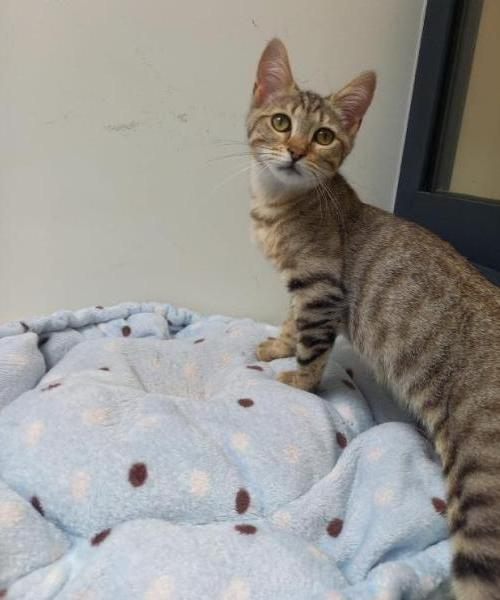

Nestle



Femelle - chat européen - 4 mois
Je suis Nestle. Je suis arrivée dans un jardin avec ma soeur Zoya, tranquillement pour réclamer de quoi manger, reprendre des forces et continuer nos péripéties à la découverte de la vie. Mais la liberté sans protection peut vite devenir une terrible jungle emplie de danger pour un chaton, alors le refuge espère que vous viendrez nous offrir la sécurité, la tendresse et évidemment de grandes parties de jeux !